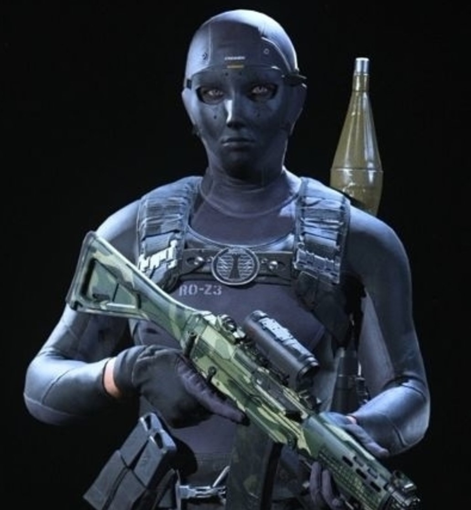
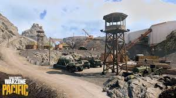

Call Of Duty: Warzone
Bienvenidos a Caldera
Caldera
Un mapa con excelentes espacios para combates de cortas y largas distancias

Caldera se ambienta en el Pacífico durante la Segunda Guerra Mundial . Así pues, verás edificios y otro tipo de construcciones acordes a la época. Dada la ubicación del territorio, podrás observar un ambiente tropical donde predomina la vegetación en color verde en prácticamente toda la isla. También existen lugares con cascadas e incluso ruinas de antiguas civilizaciones. En general, Caldera se percibe como un lugar mucho más atractivo.

Rebirth Island
Rebirth se desarrolla en Alcatraz
Rebirth Island es otra manera de jugar Call of Duty: Warzone. Cuarenta jugadores aterrizan en Rebirth Island, un mapa notablemente mas pequeño que caldera, sin embargo se hace todo tal cual como lo harían en el modo battle royale: contratos, conseguir botines y encontrar dinero. Sin embargo, Rebirth Island tiene una mecánica esencial a la cual necesitarás adaptarte.
El reaparecer o resurgir (De ahi su nombre) es importante en Rebirth Island ya que no hay Gulag, el lugar al que son enviados los jugadores que han muerto por la posibilidad de reintegrarse a la batalla en Caldera. Si mueres en Rebirth Island, tendrás que esperar por una cantidad de tiempo asignada (entre 15 y 45 segundos) para volver. Sin embargo, uno de los integrantes de tu equipo debe permanecer vivo para que reaparezcas. Si todo el equipo muere, se acabó; no hay posibilidad de reintegrarse a la pelea. Los compañeros de equipo que queden vivos pueden ayudar a disminuir el tiempo de espera para reaparecer consiguiendo eliminaciones.
Etapas de Warzone
Warzone ha pasado por tres mapas: Verdansk, Verdansk'84 y Caldera
Este frenetico battle royale ha pasado por los siguientes mapas:
Verdansk: Fue el primer mapa en el battle royale, esta inspirado en la ciudad ficticia que aparece en la campaña Modern Warfare y en los modos multijugador. El mapa se basa en la ciudad real de Donetsk, ademas, Verdansk sirvia como mapa principal para la mayoría de los modos de juego que se presentaban en ese tiempo en Warzone.
Verdansk'84: Fue el segundo mapa en el battle royale, estaba inspirado en el mapa anterior (Verdansk), solo que cambiaban algunas zonas, como lo eran: TV Station, Quarry, Dam, entre otras. Tambien el mapa contaba con un filtro diferente, el cual iba de la mano con Cold War , y, cuando entrabas al avion, la cinematica era diferente a su anterior mapa
Caldera: Es el tercer mapa y es el que esta en funcionamiento actualmente junto con Rebirth Island, Caldera se ambienta en el Pacífico durante la Segunda Guerra Mundial . Así pues, verás edificios y otro tipo de construcciones acordes a la época. Dada la ubicación del territorio, podrás observar un ambiente tropical donde predomina la vegetación en color verde en prácticamente toda la isla.
INFINITY WARD
Desarrollador mas querido
Operadores mas queridos
-

Roze
En su momento era la skin mas usada -
Mil-Sim
Skin que usan los pro-players. -
Billy
Querida solo porque hace referencia a la pelicula.
Tags
Warzone Call Of Duty Modern Warfare Cold War Battle Royale Accion Frenetico Vanguard Rebirt Verdansk Caldera
Mapa Actual (Algunas Zonas)

Follow Me
Subscribe
Enter your e-mail below and get notified on the latest blog posts.